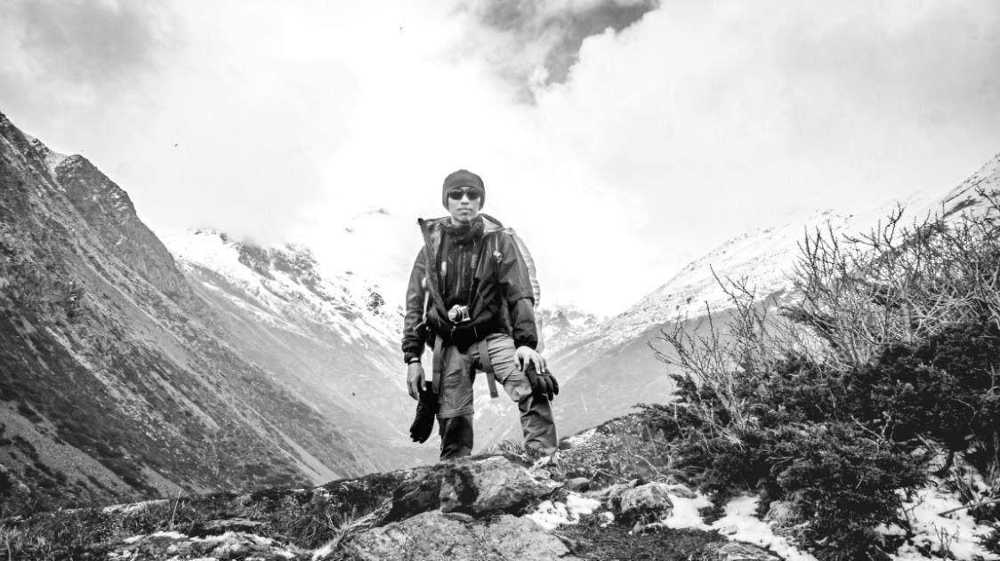

About
I am currently studying at the Singapore University of Technology and Design (SUTD), pursuing a Bachelor of Science in Architecture and Sustainable Design.
I am an aspiring architect with a strong passion for reshaping the world to enhance people's experience and how they interact with their surroundings. With a keen eye for detail and a desire for continuous learning, I am committed to leaving a positive impact on the environment and the communities that I serve. I am also well versed in other forms of digital media — photography, video, graphics and more.
View Resume →